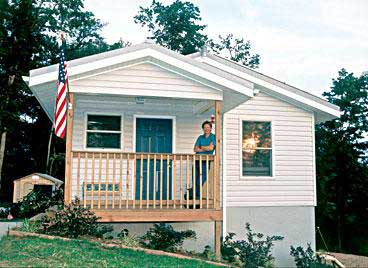

Allan B. Hunt
Jeff Christian, director of the Oak Ridge National Laboratory's Buildings Technology Center, on the porch of a Tennessee solar test home that averages total energy bills of just $25 a month.